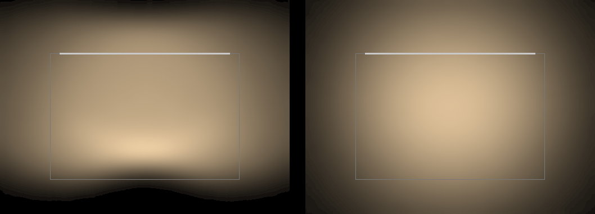
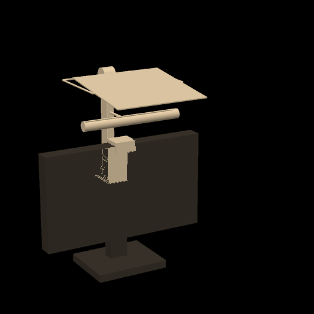
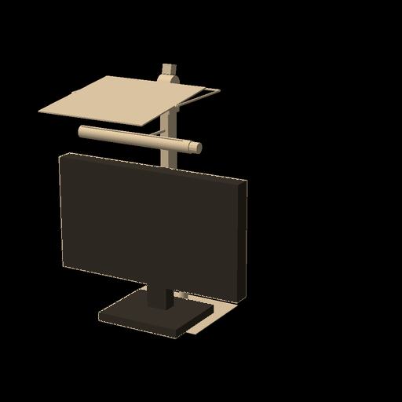
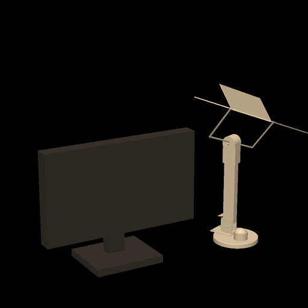

(a) Klype · band
293 lm · 2,9 W · 3000 K · 350 lx · U0 0,70
På skjermkanten. Held alle lyskrava i lysmotoren, og bordet er fritt.
1143 g på skjermen · knotten 65 cm unna

(b) Under · band
293 lm · 2,9 W · 3000 K · 350 lx · U0 0,70
Same lys. Står sjølv på ei stålplate under skjermfoten.
2260 g · toler 7,0 N dytt · 690 cm² under skjermen

(c) Fot · knekk
283 lm · 2,8 W · 3000 K · 350 lx · U0 0,29
Ruta på fot med spegelrute. Held veggen, men feltet blir ujamt.
1293 g · 196 cm² · veltar ved 1,9 N · auget 660 cd/m²
Bandprøva i papp, før noko blir bygt · føreseiingar sette 13.11
Stripa 24 cm mot rein plate: lågaste rute delt på snittet 0,55 til 0,70.
Same stripe dekt til 12 cm: under 0,4.
Stripa 42 cm under plata, som på fot: ei lys line, under 0,1.
Sitjande ser du ikkje stripa. Ståande framfor bordet ser du ned i renna.